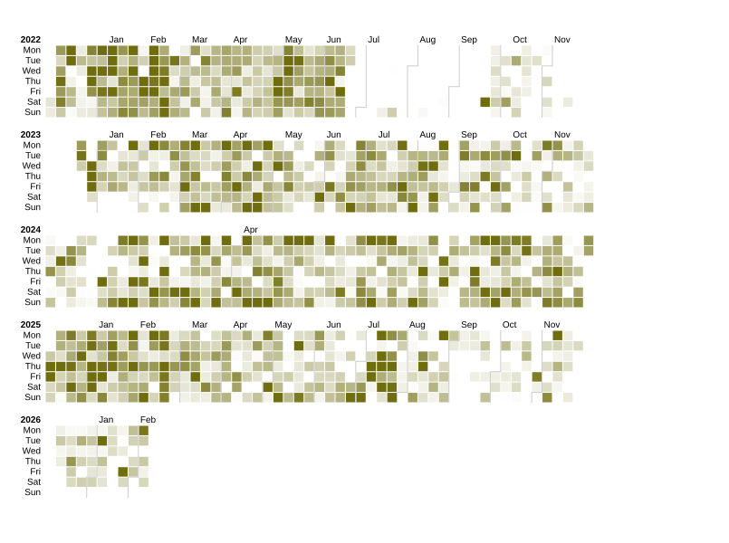

Tonalidad
¿Han cambiado mis tonalidades preferidas con el tiempo?
Comparando las 7 tonalidades más escuchadas entre dos períodos: 2020–2022 vs 2023–2025.

Un recorrido visual por más de 226,000 reproducciones, 38,000 canciones y 7,200 artistas a lo largo de 12 años de historia musical.
Desde junio de 2014 hasta marzo de 2026
El dataset fue construido combinando múltiples fuentes de datos a través de un pipeline de enriquecimiento modular.
Un calendario de actividad musical que revela los ritmos estacionales y los picos de escucha a lo largo de los años.

Un streamgraph que muestra la evolución de los géneros musicales más escuchados a lo largo de la década.
Explorando las dimensiones emocionales y rítmicas de la música que más escucho.
Comparando las 7 tonalidades más escuchadas entre dos períodos: 2020–2022 vs 2023–2025.
Un panorama interactivo de cómo cambiaron mis hábitos musicales a lo largo del tiempo.

12 años de escucha convertidos en patrones, tendencias y descubrimientos. Cada reproducción es un dato; juntas, son una historia.